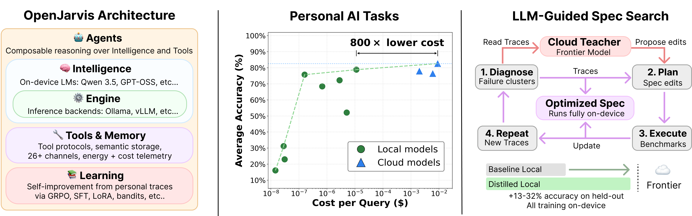
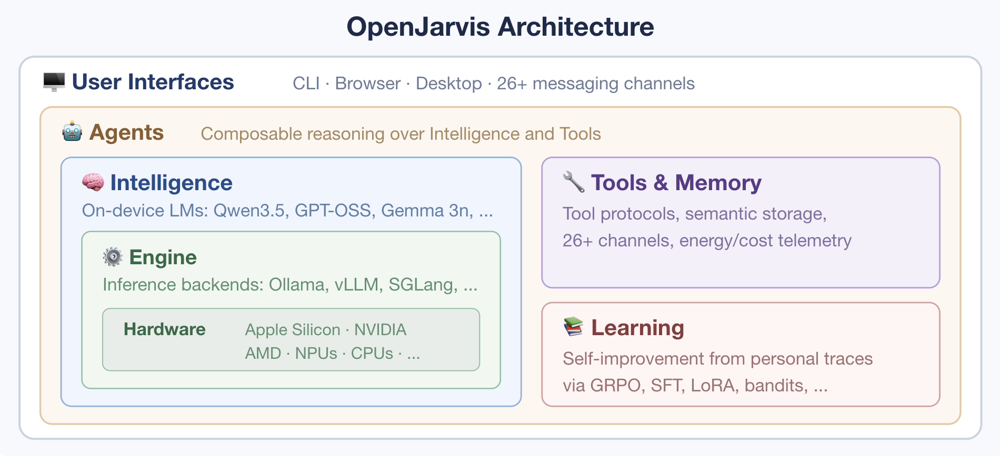
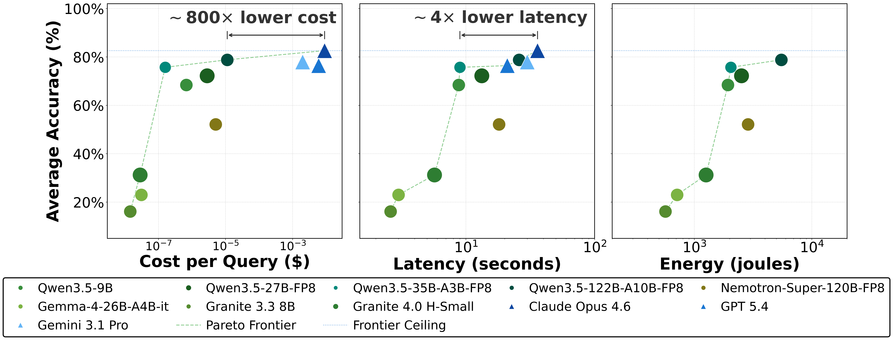
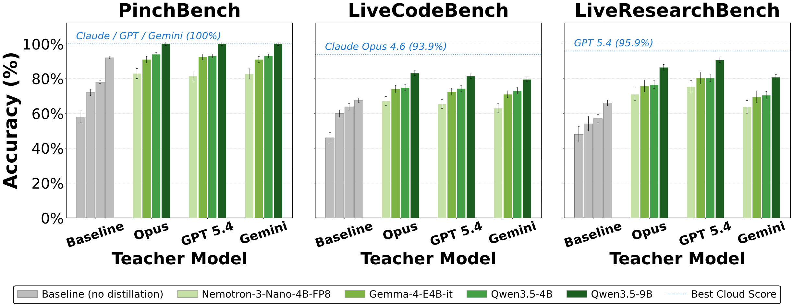
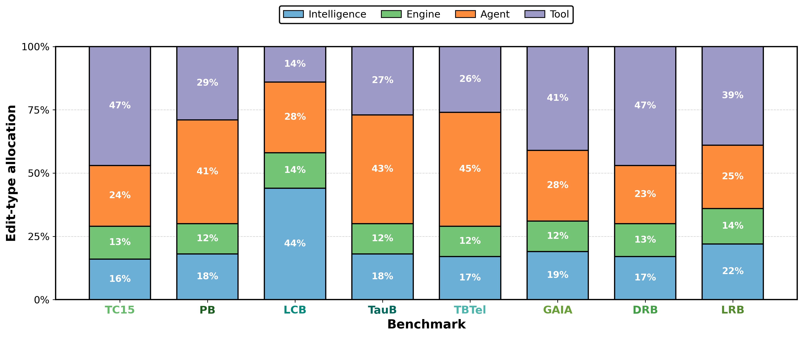

OpenJarvis：把整套 Personal AI 搬上本地设备，用 cloud 模型在「搜索期」改写 spec、本地「推理期」零云调用
Personal AI, On Personal Devices (OpenJarvis)
①开源贡献 Open-source Artifacts
论文在首页给出了代码仓库与项目主页两个链接。截至解读日（2026-06-17）核实：项目主页可访问（GitHub Pages 文档站），但论文标注的 GitHub 代码仓库 github.com/openjarvis/openjarvis 在解读当日返回 404（未能访问/尚未公开）。本文用到的若干 benchmark 本身是已有的第三方开源资源（其链接见原文参考文献），而 OpenJarvis 自己的训练/搜索 harness 是否随仓库一并开源、采用何种许可证，因仓库未能打开而无法核实。下表只标注实际核实到的状态。
| 类型 | 是否开源 | 内容 / 链接 |
|---|---|---|
| 代码 Code | 论文声称 / 解读日 404 未核实到 | github.com/openjarvis/openjarvis（首页标注的官方仓库；解读当日返回 404，未能确认内容与许可证） |
| 项目主页 / Demo | ✔ 可访问 | open-jarvis.github.io/OpenJarvis/（文档站；自述为「composable, on-device AI」研究框架，含 browser / 桌面 app / Python SDK / CLI 的 quickstart 与架构文档） |
| 模型权重 Weights | ✘ 未发布 | 本文使用既有 open-weight 家族（Qwen3.5、Gemma4、Granite、Nemotron 等），并不发布新权重；LLM-guided spec search 产出的是「优化后的 spec + 本地 student 的训练触发」，论文未声明单独发布权重 |
| 数据集 Dataset | ✘ 未发布新数据 | 评测/训练用的是既有公开资源（如 GeneralThoughtArchive、MMLU-Pro、GAIA、τ-bench 等已有 benchmark），本文未声称发布新数据集 |
| 环境 / Benchmark | 复用第三方 | 8 个评测 benchmark 均为已有开源工作（ToolCall-15、PinchBench、LiveCodeBench、τ-Bench V2、τ²-Bench Telecom、GAIA、LiveResearchBench、DeepResearchBench），各自链接见原文参考文献 |
②研究动机与贡献 Motivation & Contribution
背景与问题：personal AI 几乎全靠云，但「换本地模型」会整套崩
所谓 personal AI stack（论文举例 OpenClaw、Hermes Agent 等）已成为日常写作、研究、coding、日程管理的中枢。问题是它们「很少是本地或私密的」：几乎每条 query（常常裹挟着你的私人数据）都被路由到云端 frontier 模型。这带来四个具体痛点——每年上千美元的 API/订阅开销、私人数据上传第三方服务器、必须联网、以及用户对所依赖模型「没有 ownership」；外加单 token 能耗比本地执行高出几个数量级。
与此同时硬件这边已经成熟：消费级加速器配合 FP8 量化已经能跑 1B–128B 的 open-weight 模型，而 Qwen3.5、Gemma4 这类家族在 personal AI 任务上只落后 frontier 云模型 6–12 个月（不是几年）。可现实里本地模型仍被困在「调调语气、补补文本」的 trivial 任务上。
最自然的想法是「原地换模型」：把现有 stack 里的云模型直接替成本地模型。本文一上来就证明这条路不通——保持 OpenClaw / Hermes Agent 其余部分不变，仅把 Claude Opus 4.6 换成 Qwen3.5-9B，PinchBench / GAIA 上准确率暴跌 25–39 pp。作者归因于两点：
- 替换会击穿「单体式」stack（substitution breaks monolithic stacks）。现有 stack 把 agent prompt、tool description、memory 配置、runtime 设置全部「焊死」进框架，并且是围绕那个特定云模型协同设计的。换一个本地模型，等于同时把这些全部打破。
- 单 primitive 优化会到顶（single-primitive optimization plateaus）。这些被捆绑的组件里，无需改源码就能调的只有 prompt。把 SOTA prompt optimizer（GEPA、DSPy）只作用在换进来的本地模型上、其余固定，仅能补上 5 pp 的云-本地差距。一次只优化一个 primitive，给不出 model / prompt / tools / runtime 之间「协同改动」所需要的那种联动。
本文的切入点：把整套 stack 解耦成一个可优化的 typed spec
核心 insight 很朴素：每个本地模型都需要把周围那套 agent 系统围着它重新配置一遍；既然如此，就把这套「重新配置」显式化、可优化化。OpenJarvis 把 personal AI 系统拆成五个带类型接口与 registry 的 primitive，组合进一个叫 spec 的 typed 配置对象——spec 把 stack 的每个组件都暴露成「一个可优化对象里的一个自由度」，于是整套 stack 第一次能在 accuracy / cost / latency 上被端到端地优化与度量。
核心贡献
- 提出 OpenJarvis 架构与 spec 抽象。把 personal AI 系统拆成五个 typed primitive（Intelligence、Engine、Agents、Tools&Memory、Learning），组合进一个可版本化、可分享、可在标准 benchmark 上评测、可端到端优化的 spec。
- 提出 LLM-guided spec search。一种 local–cloud 协作搜索：frontier 云模型在「搜索期」读 trace、跨四个可编辑 primitive 提改写建议，held-out gate 只接受不退步的改动；产出的 spec「推理期完全跑在本地、零云调用」。它把云-本地差距再缩小 13–32 pp，且优化成本比单 primitive baseline 低 7–11×。
- 跨 8 个 personal AI benchmark 的系统分析。证明本地 spec 在 marginal API cost 与 latency 上是 Pareto 最优（约 800× 更低 marginal API 成本、4× 更低端到端延迟），并把「proposer 选择」与「可编辑面（move space）」各自对收益的贡献拆开。
③方法 Method
OpenJarvis 由三部分组成：spec 抽象（§3.1）、联合 accuracy–efficiency 评测（§3.2）、LLM-guided spec search（§3.3）。下面先看全局图，再逐块拆。

3.1 五个 primitive 与 spec 抽象
OpenJarvis 把一套 personal AI stack 拆成五个独立自由度，每个都是「现有部署系统里本就可以独立配置」的一类选择：
- Intelligence：语言模型本身（架构 + 权重）与生成参数。例：选 Qwen3.5-9B 还是 Qwen3.5-122B。
- Engine：推理 runtime、硬件执行路径、batching、quantization、cache 设置。例：用 vLLM 还是 Ollama。
- Agents：reasoning loop、prompt、tool-use policy。例：ReAct 还是 CodeAct。
- Tools & Memory：外部接口、retrieval、持久化用户状态。例：filesystem / web search / MCP server。
- Learning：从 trace 更新 spec 的 optimizer。它在结构上与前四者不同——它是用来优化其余四者的那个 primitive，可以是 weight-only optimizer（LoRA）、prompt optimizer（DSPy），也可以是本文的 LLM-guided spec search。
关键设计是把「在真实部署里本来就彼此独立」的选择分开：Intelligence 与 Engine 把「选模型」和「选 runtime」分开；Agents 与 Tools 把「reasoning loop」和「它调用的接口」分开。五者组合进 spec——一个 typed 配置对象，可被版本化、分享、在标准 benchmark 上评测、端到端优化（原文给出对应的 TOML 序列化形式，见 Appendix A.1 / Figure 9）。

S := { Intelligence:(model,params,quant), Engine:(backend,batch,kv_cache), Agent:(loop,prompts,tool_strategy), Tools:(set,descriptions,memory), Learning:(optimizer,reward,gate) }。妙处在于：所有 optimizer 共用同一个 optimize 签名，只是各自限制能编辑哪些 field——LoRA 只改 Intelligence 权重；DSPy / GEPA 只改 Agent prompt；LLM-guided spec search 则联合编辑 Intelligence、Engine、Agents、Tools&Memory 四者。一次编辑可以跨 primitive（例如「同时改写一个 tool description 并针对改写后的 prompt 更新权重」），这是单 primitive optimizer 天然表达不出来的。
3.2 评测：以「完整 spec」为单位、每条 query 记五个量
本文评测的不是孤立模型，而是完整 spec。一个 instrumented wrapper 对每条 query 记录五个量：accuracy、energy、latency、power、dollar cost。其中 accuracy 视 benchmark 而定为 exact match 或 LLM-judge 胜率；energy 对本地硬件经厂商 API 实测、对云 baseline 按已有工作估计；latency 是端到端 wall-clock；power = energy/latency；dollar cost 是按 token 的 API 计费 + 工具费，本地推理记为 $0 marginal API 成本，硬件与电费单列。这样本地与云配置就能放在同一组坐标轴上比较，暴露出 accuracy-only benchmark 与单轴效率工具看不到的 Pareto 结构。
3.3 LLM-guided spec search：cloud 出搜索期智力，local 跑推理期
这是全文的方法核心。它在 spec 的 primitive field 上搜索：每个 spec 就是一份完整的本地 AI 配置，改它的 field 就定义了搜索空间。这个 loop 被刻意设计成 local–cloud 分工：
- frontier 云模型负责「搜索期」——它擅长读 trace、对「跨多个 primitive 的协同改动」做推理，于是由它来提改写建议；
- 本地硬件负责「推理期」——它擅长以低延迟、零 marginal API 成本跑出最终配置。
每一轮搜索 session 重复四步（diagnose → plan/propose → execute → repeat）：
- Diagnose（诊断）：frontier 模型读 student 当前 spec 的可见 trace，把「共享同一失败模式」的 trace 聚成 failure cluster，每个 cluster 标注 student vs teacher 成功率，并配一句自然语言的技能差描述（例：「student 在需要日历查询的多跳问题上失败，因为它没调用 calendar 工具」）。
- Plan / Propose（提改写）：针对某个 cluster，frontier 模型跨 Intelligence、Engine、Agents、Tools&Memory 四者提候选改写。Intelligence 改 = 改模型参数或训练触发；Engine 改 = 改 runtime/serving；Agent 改 = 改 prompt/reasoning loop/verification；Tools&Memory 改 = 改工具可用性/工具描述/memory 配置。
- Execute + Gate（执行 + 把关）：每个候选 spec 在 held-out 例子上评测，由 gate 决定取舍——只接受「让目标 cluster 变好、且任何其它 cluster 退步不超过 ε」的改动（默认 ε=1%，对权重/prompt/工具描述/memory/runtime 一视同仁）。
- Repeat：接受的改动成为下一轮的新 spec，拒绝的回滚。当 gate 分数连续 k 个 session 停滞（默认 k=5）或预算耗尽时停止。
当某条改动确实涉及 Intelligence 训练（即要更新本地 student 权重）时，作者额外给一个 composite reward，在 GRPO 训练里给每个候选回答 $y$（对 query $q$）打分：
$$ R(q,y) = \alpha R_{\mathrm{acc}}(q,y) - \beta \hat E(q,y) - \gamma \hat L(q,y) - \delta \hat C(q,y). $$其中 $R_{\mathrm{acc}}$ 是准确率项，$\hat E/\hat L/\hat C$ 分别是归一化后的 energy / latency / cost 惩罚，默认权重 $(\alpha,\beta,\gamma,\delta)=(0.5,0.1,0.1,0.3)$。这个 reward 只在「某条 Intelligence 编辑内部」的训练时用来给回答打分；spec 整体好坏仍由上面的 gate 评判。
三种优化范式的对比（原文 Algorithm 1/2/3）
作者把要比较的三种 spec 优化方式摆在一起：
- LLM-guided spec search（Algorithm 1）：贪心、带 gate 的跨 primitive 编辑（本文方法）。
- Evolutionary spec search（Algorithm 2）：维护并合并一个候选 spec 种群，从 Pareto frontier 采样、做 reflective mutation（对标 GEPA 的进化机制），move space 同样是四 primitive。
- Single-component optimizer（Algorithm 3）：一次只改一个 primitive（如只改 Intelligence 或只改 Agent），无法利用 primitive 之间的耦合。
这一组对比把两条轴分开：谁来 propose（proposer 轴） 与 能改几个 primitive（move-space 轴）——后面 §4.4 的消融正是沿这两轴展开。
④实验评估 Evaluation
评测设置
- 规模：8 个 benchmark、4 个家族里的 11 个本地模型、3 个云 baseline、7 种硬件平台；共 508 个任务；agentic benchmark 每任务 2 小时超时；所有结果取 5 次独立运行均值；除 benchmark 自带确定性评分外，统一用 GPT-5-mini 当 judge。
- 8 个 benchmark（各考察什么）： ToolCall-15 (TC15)—单轮 tool-calling 准确率（15 个固定场景、确定性评分）； PinchBench (PB)—端到端 agent 任务完成（23 个跨日程/邮件/研究/coding 的真实任务，自动检查 + LLM judge；原是 OpenClaw 生态的 canonical benchmark）； LiveCodeBench (LCB, v6)—防污染的竞赛编程； τ-Bench V2 (TauB)—多轮客服对话（航空/零售域 100 任务，按数据库状态评分）； τ²-Bench Telecom (TBTel)—双控电信域（agent 与 user 都改共享环境，40 任务）； GAIA—通用 AI 助手（50 题，需 web 检索 + 多步推理 + 工具）； LiveResearchBench (LRB, v4)—深度研究（100 专家任务，DeepEval checklist 评分）； DeepResearchBench (DRB)—PhD 级深度研究（跨 22 域，评 80 任务子集）。
- 对比基线：云端 frontier 模型（headline 用 Claude Opus 4.6）；prompt-only 优化器（DSPy/SIMBA、prompt-only GEPA）；weight-only 优化器（SFT、LoRA）；以及 evolutionary spec search 与 random-from-catalog 两个同 move-space 的 proposer。
- 指标：accuracy（exact match 或 LLM-judge 胜率，越高越好）、marginal API cost（$/query，越低越好）、end-to-end latency（越低越好），外加 energy/power。
结果一：spec 把「换本地模型」的暴跌救回大半（固定 Intelligence）
Table 1 做了一个「可移植性三角」对照：对 OpenClaw 与 Hermes Agent 两个生产框架，各跑三种条件——(a) 默认 + 云模型、(b) 默认 + Qwen3.5-9B、(c) OpenJarvis spec（Intelligence 固定为 Qwen3.5-9B，只优化 Engine / Agent / Tools&Memory）。所有 ∆ 相对 (a) 报。
| 框架 / 条件 | PinchBench Acc. | ∆ vs (a) | GAIA Acc. | ∆ vs (a) |
|---|---|---|---|---|
| OpenClaw (a) 默认 + 云模型 | 96.0 | Ref. | 58.0 | Ref. |
| OpenClaw (b) 默认 + Qwen3.5-9B | 62.3 | −33.7 | 19.2 | −38.8 |
| OpenClaw (c) OpenJarvis + Qwen3.5-9B | 88.4 | −7.6 | 41.5 | −16.5 |
| Hermes (a) 默认 + 云模型 | 93.5 | Ref. | 55.1 | Ref. |
| Hermes (b) 默认 + Qwen3.5-9B | 68.7 | −24.8 | 22.4 | −32.7 |
| Hermes (c) OpenJarvis + Qwen3.5-9B | 87.9 | −5.6 | 40.8 | −14.3 |
读法：直接换本地模型 (a)→(b) 掉 24.8–38.8 pp；用同一个本地模型、但套上 OpenJarvis spec 后 (c)，残余差距只剩 5.6–16.5 pp。也就是 spec 在 Intelligence 不变的前提下，补回了 PinchBench 约 77%、GAIA 约 56–57% 的暴跌。作者强调这说明暴跌是「架构性」的、不是「能力性」的——OpenClaw / Hermes 把 prompt、工具描述、memory、runtime、模型专属输出预期全焊死在那个云模型周围，spec 把这些假设暴露成 typed slot 才得以重定向。GAIA 救回得少，是因为它的深推理需求超出 9B 模型上限、再怎么配也补不齐。
结果二：本地最佳 spec 平均只差云 3.2 pp，但成本/延迟碾压
跨全部本地 spec，最好的单一本地 spec Qwen3.5-122B 平均 80.3% accuracy，仅差 Claude Opus 4.6（83.5%）3.2 pp；在 per-benchmark 层面，本地最佳模型在 8 个里 4 个追平/超过云（ToolCall-15、PinchBench、LiveCodeBench、τ-Bench V2），剩余差距集中在 GAIA、τ²-Bench Telecom、DeepResearchBench。效率上：Qwen3.5-122B 每 query 约「千分之一美分」级，对 Claude Opus 4.6 的 $0.009，给出约 800× 更低 marginal API 成本（只换来 3.2 pp accuracy 让步）；端到端完成完整 agentic 工作流约快 4×（不过单轮 prompt 因云端 time-to-first-token 优化反而可能利好云）。本地配置因此构成 accuracy–cost / accuracy–latency 的 Pareto frontier。

结果三：LLM-guided spec search 再缩 13–32 pp、且优化更便宜
对剩下的「推理/研究密集型」任务，spec search 上场。在 PinchBench / LiveCodeBench / LiveResearchBench 上，每个 student–teacher 组合都优于未优化 spec；最强的 search-优化 Qwen3.5-9B student 达到 PinchBench 100.0%、LiveCodeBench 83.0%、LiveResearchBench 91.0%。在全 8-benchmark 套件上，各 student 模型平均增益 13.1–31.5 pp。和单 primitive baseline 比：prompt-only baseline 平均只加 4.1–5.2 pp，LoRA 是最强的单 primitive baseline，而 spec search 比 LoRA 再多 1.1–8.8 pp、比 prompt-only GEPA 多 5.0–18.8 pp，且优化成本低 7.1–10.9×。成本优势来自 gate：被拒的编辑不会触发完整训练，被接受的编辑跨 session 复利累积。

消融：proposer 与 move space 两条轴各自起作用
这是全文最关键的拆解（原文 Figure 8）：
- proposer 轴（同样四 primitive move space）：LLM proposer 达 83.0–100.0%，而 evolutionary spec search 为 73.0–94.5%（差 5.5–18.0 pp，平均 10.0 pp）、random-from-catalog 为 69.0–92.5%（差 7.5–21.0 pp，平均 14.0 pp）。说明「edit catalog + gate」本身不解释收益，「先诊断再提改写」的反思 loop 才是关键。
- move-space 轴（固定 LLM proposer）：从「只可改 1 个 primitive」扩到「全部 4 个」，accuracy 多加 5.5–16.5 pp、latency 加速多 2.65–3.45×。反过来把本应独立的 primitive 对「合并」，accuracy 掉 2.8–9.7 pp、加速掉 1.09–1.95×。
- 两条轴缺一不可：LLM teacher 需要四 primitive 的 spec 才能到 83.0–100.0%，四 primitive 的 spec 也需要 LLM teacher 才能榨出该 move space 的全部增益。
optimizer 到底学到了什么
一个有意思的分布性发现：被接受的编辑并不集中在 Intelligence 权重上——权重更新只占被接受编辑的 16–44%，其余分散在 Engine / Agent / Tool field。而且「主导 primitive」会随任务结构变化：code 任务里 Intelligence 编辑主导（LiveCodeBench 44%）、客服/agentic 任务里 Agent 编辑主导（PB/TauB/TBTel 41–45%）、tool-calling/研究任务里 Tool 编辑主导（TC15/GAIA/DRB/LRB 39–47%）。在 per-failure 层面，teacher 会把每类诊断映射到对应 primitive：retrieval 失败→多给 Tool 编辑、reasoning 失败→多给 Intelligence 编辑、control-flow 失败→多给 Agent 编辑、效率受限失败→多给 Engine 编辑。这解释了为何没有任何单一 primitive 能逼近联合搜索的天花板：有用的干预取决于失败模式，许多失败需要跨多个 primitive 的协同改动。

⑤洞见 Insights
局限与未来
作者诚实列出的局限：（1）统计精度——每个配置只跑 5 次；（2）可能的 judge 偏差——多数 benchmark 用 GPT-5-mini 当 LLM judge；（3）只在单机评测（single-machine evaluation only）。此外 GAIA / τ²-Bench Telecom / DeepResearchBench 这类深推理/深研究任务上，本地模型即便经 spec search 也仍有残余差距（部分受限于本地模型本身的能力上限）。作者另做了四类稳健性扰动（reward 权重变体、search-seed 方差、random-restart、proposer 对比），变动均小于 headline 效应。隐私/释放安全等更广影响在 Appendix E 讨论：搜索期只传输「合规的 trace」，且按其估算，在每天 100 query 的使用强度下，proposer 的摊销成本在六个月内降到每 query 低于 $0.001。
与相关工作的关系（基于本文自身论述）
本文把现有生态描述成「碎片化」：personal AI 框架（OpenClaw、Hermes Agent、LangChain、CrewAI 等）把 Agents/Tools 做成可配置层，却把 Intelligence/Engine/Learning 绑死在特定云模型上；本地推理工具（Ollama、llama.cpp、LM Studio、vLLM、SGLang 等）把 Engine/Intelligence 做成可配置层，却不提供 Agents/Tools/Learning；优化方法（LoRA/QLoRA/GRPO 改 Intelligence，DSPy/GEPA/ACE 改 Agents）一次只动一个 primitive；评测工具（Zeus、AI Energy Score、MLCommons）只测一个 primitive 的一根轴。LLM-guided spec search 把方向扩展到「四个可编辑 primitive + Learning 当 optimizer 槽」，因此与单 primitive 方法互补而非替代——它操作的正是这些方法会去编辑的同一个 spec。它也和 Minions、Advisor Models 这类「推理时 local-cloud 协作」不同：后者不持久更新任何 primitive，而 spec search 把改动固化进 spec；和 OpenClaw-RL（最接近的持续本地学习工作）相比，后者只在云端 loop 里更新 Intelligence 权重，本文则跨四个 primitive 联合优化。